2014年15款最棒的HTML&CSS框架
CSS框架
-
1).Toast
Yaml 是一个模块化的 CSS 框架，可以用来构造灵活，可访问和响应式的页面。YAML 提供一系列完整的匹配构建模块来创建复杂的网页界面。网格，导航，表格，字体排版模块和所有附件都能进行无缝的协同合作。所有的布局模块都能兼容 HTML5 和 CSS 3，还很容易兼容其他最新的 web 开发技术。
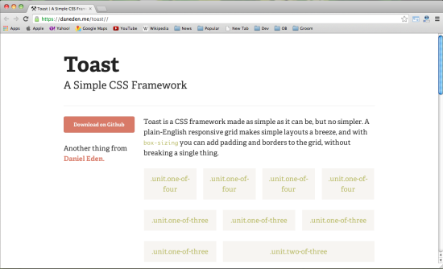 -
2).yaml
Toast 是一款让所有设计都尽可能简单的 CSS 框架，但它又一点也不简单。一个全英文响应式网格很容易就构造一个简单的布局，box-sizing 功能允许用户自由的填充网页和网格边界，而不需要改变其他任何一个地方的设计。
特性:
- 灵活的网格系统
- 主题支持的灵活形式的工具包
- 聚焦于web标准和可访问性
- 为所有标准元素进行排版优化
- 利用匹配构建模块进行快速的原型开发
- 命名空间避免与第三方CSS冲突
- 为HTML5和CSS3做好了充分的准备
- 非常小的框架核心 (5.9 kB)
- 建立在Sass基础上
-
3).Gumby
Gumby 2 是建立在Sass的基础上的，Sass 是一款非常强大的 CSS 预处理器，允许用户自主快速的开发扩展 Gumby — 同时提供很多新的工具来自定义和扩展 Gumby 框架。Gumby 是一个响应式的以及 960 像素宽度的 CSS 网格框架，支持 PC、平板和手机屏幕显示。类似Twitter的Bootstrap，它包括一个Web UI工具包，有好看按钮，表格，导航+标签和一个很小的JavaScript文件Gumby 2 是一个非常棒的响应式 CSS 框架，为了更好的生存，网页应该对移动端更友好。
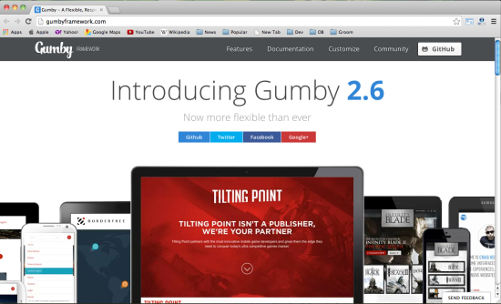 -
4).Responsive
Responsive GS 是一个流体网格 CSS 框架，用于快速开发响应式的 Web 网站。Responsive GS 提供三种风格：12、16 和 24 列，使用 media queries 支持所有标准设备。
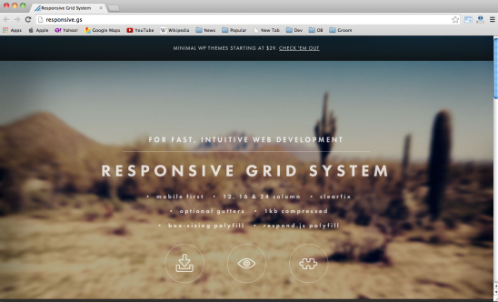 -
5).Less Framework
Less Framework 是一个 CSS 网格系统，用来设计自适应网页，包括 4 个布局和 3 套字体预设置，所有都是基于单个网格的。
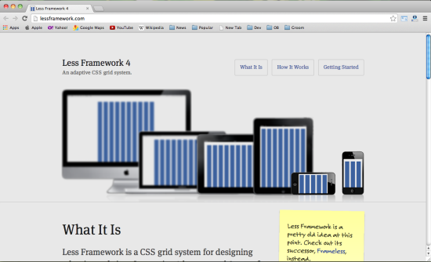 -
6).Columnal
Columnal CSS 框架是一个众多自定义代码组合成的“混合体”，是一款富有弹性的 CSS 框架，用来进行响应式网页的快速原型开发。灵感来源于960 Grid System。
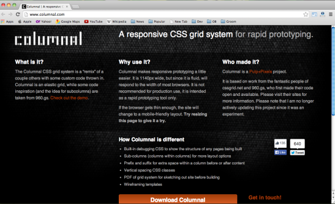 -
7).Foundation
Foundation 5 是目前最快的 CSS 构建框架了，里面包括了丰富的特性，让你更快更好的学习里面的代码。Foundation 是一个易用、强大而且灵活的框架，用于构建基于任何设备上的 Web 应用。提供多种 Web 上的 UI 组件，如表单、按钮、Tabs 等等。
-
8).Susy
Susy 是一个基于 Natalie Downe 的CSS Systems的 CSS 框架，通过Sass 实现，利用 <Compass来简化，可用于静态网站以及各种框架应用。
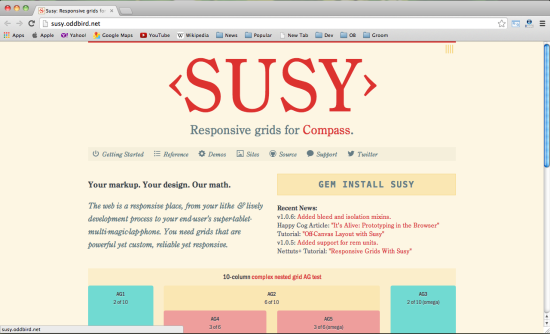 -
9).Kube
Kube 足够的简单，足够小，具有很强的自适应能力，是个响应式的 CSS 框架。它拥有最新最炫的网格和漂亮的字体排版，没有任何样式绑定，给用户以绝对的自由。
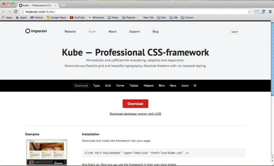 -
10).Bootstrap
Bootstrap是快速开发Web应用程序的前端工具包。它是一个CSS和HTML的集合，它使用了最新的浏览器技术，给你的Web开发提供了时尚的版式，表单，buttons，表格，网格系统等等。
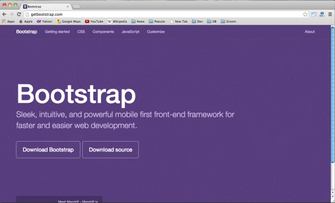
HTML框架
-
11).HTML Kick Start
HTML KickStart 拥有极简的 HTML5 ，CSS 和 JS 构建模块，能够快速生成网页。
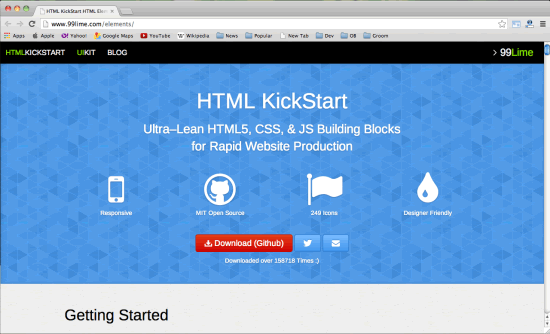 -
12).HTML5 Boilerplate
HTML5 Boilerplate 能帮助用户快速的构建健壮，适应能力强的 web 应用或者页面，只需要一个小小的集成了 100 多个开发者智慧和努力的开发包就可以开发属于你自己的网页。
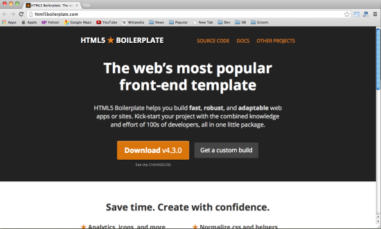 -
13).Skeleton
Skeleton 是一个小的 JS 和 CSS 文件的集合，可帮你快速开发漂亮的网站，适合各种屏幕设备包括手机。Skeleton 基于960 grid开发。它是一个 UI 框架。
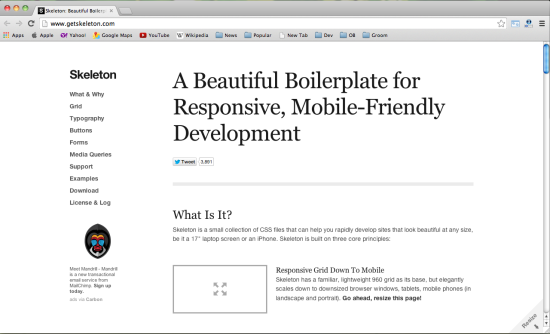 -
14).Montagejs
MontageJS 是一个现代化，功能齐全的 HTML5 框架，用来快速创建一个单页应用。Montagejs 使用通过了时间考验的设计模式和软件的各种原则来开发你的项目，使用户的网页得到很好的高质量的用户体验。同时提供了很好的设计者和开发者更好的协同合作 的方式。Montage 打开web开发的新的世界的机会。
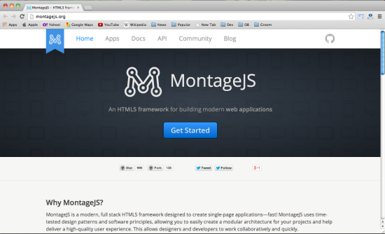 -
15).Zebra
zebra 是一个 web UI 设计框架，JavaScript 库，遵循简单的 OOP 设计理念，提供基于富 UI 设计的 HTML5 画布，包括 Java 到 Javascript 的转换工具。